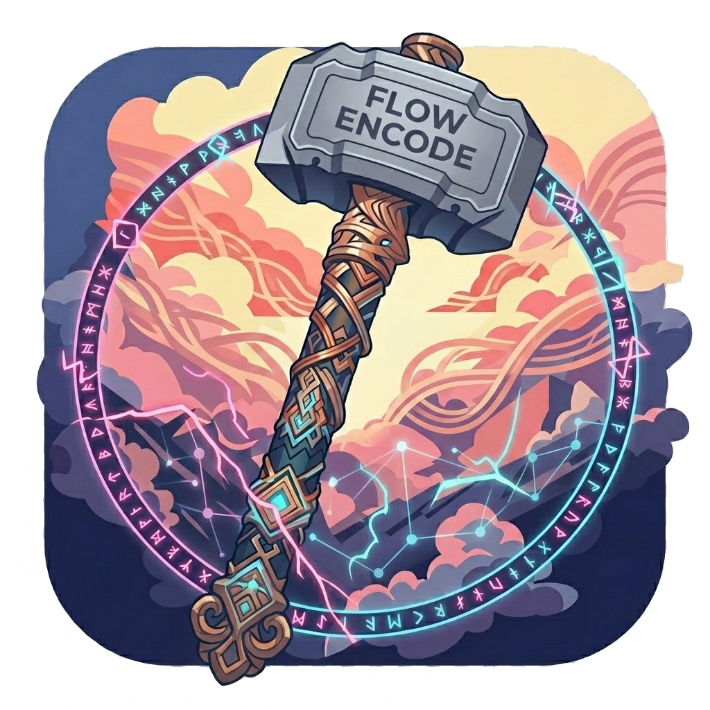
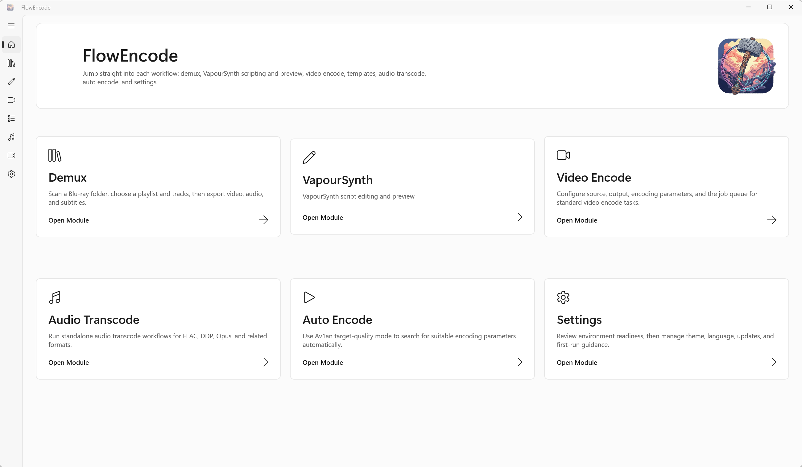

VapourSynth 工作区
编辑 .vpy / .py 脚本，查看诊断信息，预览输出帧，并读取预览日志。

FlowEncodeWindows x64 视频压制工作流前端
面向 Windows x64 的桌面端视频压制、转码与 VapourSynth 工作流前端， 统一管理脚本、编码参数、队列执行、模板复用与实时日志。
支持 x264、x265、SVT-AV1、Av1an、FFmpeg、VapourSynth 与 VMAF 目标质量流程。

项目定位
FlowEncode 面向需要图形化管理能力，同时又不希望放弃命令行编码器、 VapourSynth 脚本和 Av1an 自动压制灵活性的用户。它把输入输出、编码参数、 依赖状态、任务队列与日志组织到一个桌面工作流中。
功能
编辑 .vpy / .py 脚本，查看诊断信息，预览输出帧，并读取预览日志。
配置 x264、x265、SVT-AV1 任务，管理输入输出、编码参数、命令预览和实时日志。
基于 Av1an 执行目标质量流程，支持 VMAF、探测次数、并行度和编码器附加参数。
保存、导入、导出、置顶和复用 .profile 模板，沉淀稳定的日常压制参数。
检测、安装、更新或移除公开支持的运行时、编码器、插件和命令行工具。
程序不主动上传源文件、输出文件、模板或本地路径，运行状态保存在本机目录。
流程
在受控工作目录中组织 FFmpeg、FFprobe、VSPipe 和 VapourSynth 相关资源。
创建 x264、x265、SVT-AV1 或 Av1an 任务，并查看命令预览。
加入队列、观察日志、复用模板，让常用压制流程保持可重复。
工具链
关键词
FlowEncode 是 Windows 视频压制 GUI、Av1an 图形前端、VapourSynth 工作流前端， 也是面向 x264、x265、SVT-AV1 和 VMAF 目标质量流程的 FFmpeg 桌面转码工具。